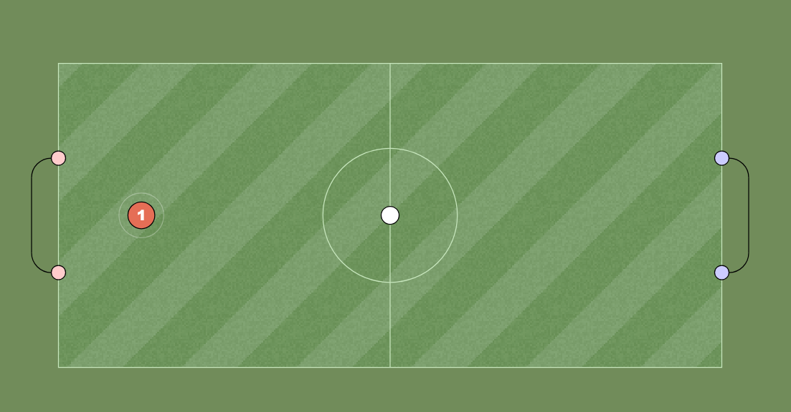

This guide will help you understand the development process behind the latest Haxball update. Here, we will explore key changes, gameplay improvements, and other essential information you need to know about the game.
The release is expected between December 25 and January 1. Additional progress updates will be shared with the Developers group via Gmail in the coming days.
Adjustments have been made to the thickness of lines on the game canvas, enhancing visibility and the clarity of in-game elements. It will be modifiable in the settings.
You can now share and download custom maps directly from the new forum. Additional options for visually customizing team colors have also been added.
New functionalities will be added to https://www.haxball.com/headless to facilitate room and map creation:
Map creation will be easier with the following implementations:
Details on implementation will be provided in the Haxball Headless Documentation.
First released in December 2010, HaxBall was originally implemented using the flash player and used RTMFP to create peer 2 peer connections in a way similar to WebRTC. Unfortunately flash player has been discontinued and so the move to HTML5 was required.
HaxBall is made by Mario Carbajal (aka basro). Special thanks to my brother, gliptic, qualo and jonsul for their miscellaneous help.